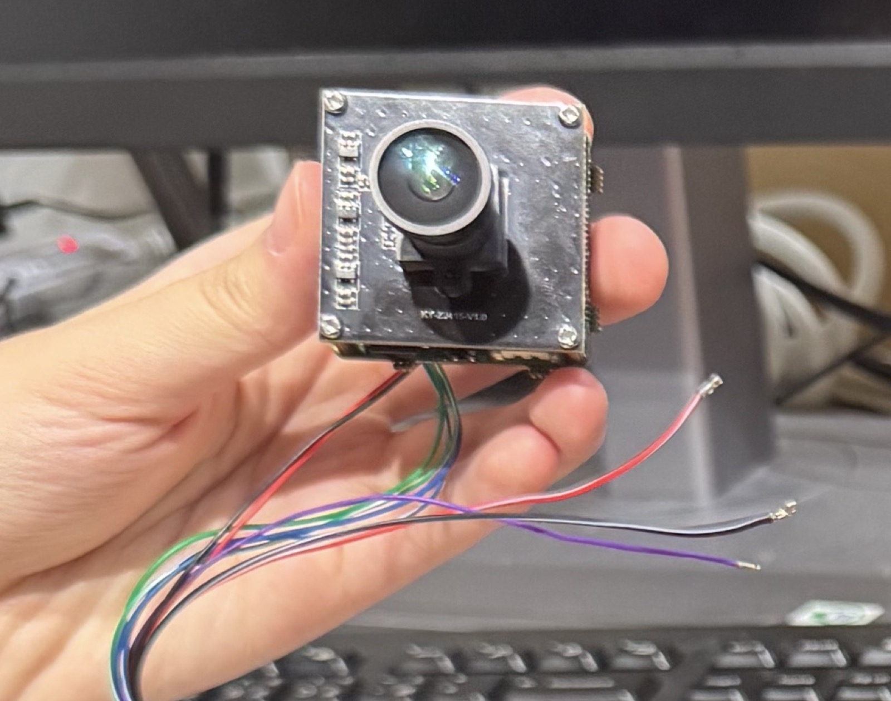

邊緣 AI 攝影機平台
全域哨兵
VORA AI Cam
The CUDA of Visual AI — 讓每一台攝影機，都能成為 AI 智慧哨兵。 將人臉辨識、入侵偵測、煙火偵測、跌倒偵測等判斷固化於設備端，實現毫秒級反應與極低頻寬。

核心功能
邊緣 AI，設備端即完成判斷
邊緣即時判斷
影像不必全程上雲，設備端毫秒級完成 AI 事件判斷。
多種內建偵測模型
人臉辨識、入侵偵測、煙火／煙霧偵測、跌倒偵測、移動分析、目標追蹤。
極低頻寬
只回傳事件、截圖與分析結果，不上傳完整影像。
隱私保護
完整影像留在本地，降低外洩與合規風險。
可離線使用
不依賴雲端連線，斷網仍可持續運作。
OTA 遠端更新
韌體與 AI 模型可持續升級，設備非一次性規格。
- App 即時通知 — 事件發生時手機立即推播警報（含地點、時間、信心度，如「入侵警報 98.2%」）
- 開放生態 — 透過 SDK／API 與 Model Store 串接第三方模型與系統整合商
技術架構
Edge AI Pipeline
Sensor → ISP（影像處理／降噪）→ Image Scaling（1920×1080 降至 640×360 降低運算量）→ AI Hardware Engine（VORA AI Engine：圖片縮放／人臉檢測／物品檢測／移動分析／目標追蹤）→ NPU（神經網路推論）→ Event Engine（事件判斷過濾）→ App／Cloud
設計理念：固定場景 × 固定模型 × 固定流程，用專用晶片＋NPU 取代大型雲端模型 — 「更小模型 × 更快硬體 ＝ 更高 AI Efficiency」。
本地自訓練系統｜六步驟全自動化
- 1提示詞輸入 — 客戶輸入需求描述
- 2AI 資料搜尋 — 自動搜尋網路資料
- 3自動標註 — 智能標註系統
- 4模型生成
- 5品質驗證 — 自動評估準確度與效能
- 6一鍵部署 — 無縫部署至機台
| 雲平台元件 | 功能 |
|---|---|
| KDC | 開發控制平台 — 模型訓練、測試、版本控制 |
| DMP | IoT 智慧管理平台 — 設備監控、數據分析、智能告警 |
| Cloud VMS | 雲端影像管理 — 儲存、回放、AI 分析、跨站點管理 |
產品矩陣：VORA Lite（單機基礎偵測）／Pro（多模型多設備管理）／Enterprise（雲平台大型部署）／SDK（設備商整合工具）。
應用場景
從安防到智慧城市
市場切入路線
監控安防（入侵／人形／煙火／跌倒偵測）→ 工廠倉儲（工安事件、危險區域入侵、物品遺留、機台異常）→ 零售商場（人流分析、排隊偵測、貨架異常）→ 交通／園區／智慧城市（車流、多場域門禁管理）
目標客群
監控設備商、系統整合商、終端企業、AI 模型開發者；便利店、銀行、學校、養老院、交通執法、工業園區
商業模式
三層定價架構
Layer 1｜硬體
NT$5,000 ／台
AI Camera／模組，市場切入與場域驗證
Layer 2｜平台授權與管理
NT$50,000 ／年／廠商
含 SDK／API、平台使用權、技術支援；另有設備月租 NT$100–150／台或 NT$1,500／場域（代管版）
Layer 3｜模型生成與商城
NT$10,000 ／次／模型
模型商城成熟後抽成約 30%
競品分析
為什麼選擇 VORA AI Cam
| 競品 | 弱點 |
|---|---|
| NVIDIA Jetson | 高效能但價格昂貴，門檻高，需專業團隊，中小企業難負擔 |
| ADLINK EVA SDK | 功能完整但整合複雜，學習曲線陡峭，無一站式方案 |
| i-PRO／海康威視 | 硬體綁定限制多，擴展性差，無法自由選配 AI 應用 |
VORA 護城河：Edge Visual AI Runtime 跨設備標準化、特製化 AI Pipeline 效率、模型商城開發者生態、設備管理＋OTA＋資料閉環形成長期客戶黏著度。全球智慧監控市場預估 2028 年突破千億美元，CAGR 超過 15%。
產品實拍
VORA AI Cam 實機與應用畫面